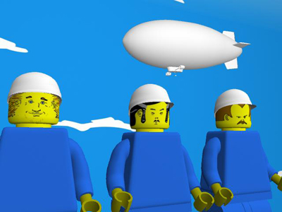

|
 A collaboration between Luke Moloney, Marc Tuters and Adrian Sinclair, Fête Mobile is an experimental autonomous media platform that centers around a robotic blimp equipped with video-capture and wireless capabilities for remote sensing the landscape from above and interacting with the public below. Carried by a twenty foot blimp, Fête Mobile is an autonomously controlled vehicle that, nevertheless, offers its audience limited access to influence its trajectory as well as its optics through an online interface. As Fête Mobile flies through the streets it also creates a wireless bubble of social activity accessible to those within its immediate proximity. The audience are invited to connect to the blimp's on-board wireless micro-computer through their laptop computers in order to exchange files with the blimp's mobile archive. This allows Fête Mobile to function as a kind of autonomous "sneaker network", physically out of reach of the authorities.
Conceptually, the Fête Mobile project is concerned with public space as well as file sharing, and the phenomenon of local community wireless networking. The high concept is of this project is thus to propose a model for an autonomous system of media exchange that exists in the public radio spectrum. As urban culture becomes increasingly networked in the midst of the volatile political landscape of the post-911 world, we must question some of our underlying beliefs in the invincibility of the Internet. While the popularly held belief is that the Internet is a distributed system, in reality it is merely decentralized. What this means, is that catastrophic failure targeted at key switching stations along the Internet's backbone could, in fact sever communication between whole regions of the globe, overnight transforming the Web into a fragmented archipelago of networked sub-regions. The likely response to safeguard the net in the wake of such a disruption would be to install a type of martial law increasing surveillance and security at the expense of individual liberty. In a world where communications over the Internet has become either impossible or unsafe, the Movable Feast / Fête Mobile functions as a lifeline. The noted literary and cultural theorist Fredrick Jameson states science fiction can be understood as a means to de-familiarizing the present. At its most conceptual level, the Movable Feast/ Fête Mobile project thus extrapolates current techno-political issues into a possible future scenario in which communities are locally connected through peering protocols whilst disconnected from Internet as a whole. As the projects accompanying Web and gallery-based documentation will recount, in the future we envision, state restrictions and corporate censorship have transformed Internet as well as urban space. Due to terrorist attacks and the subsequent imposition of martial law public spaces are no longer easily accessible. The public domain, both online and in the streets has been dramatically altered with key parts of its infrastructure disabled. Online, people are no longer able to exchange media for fear of recrimination. Fête Mobile seeks to create an autonomous mobile media system for programming public space through non-disruptive interventions. The project can be understood as an experiment in tactical media. Links http://fetemobile.ca/ |